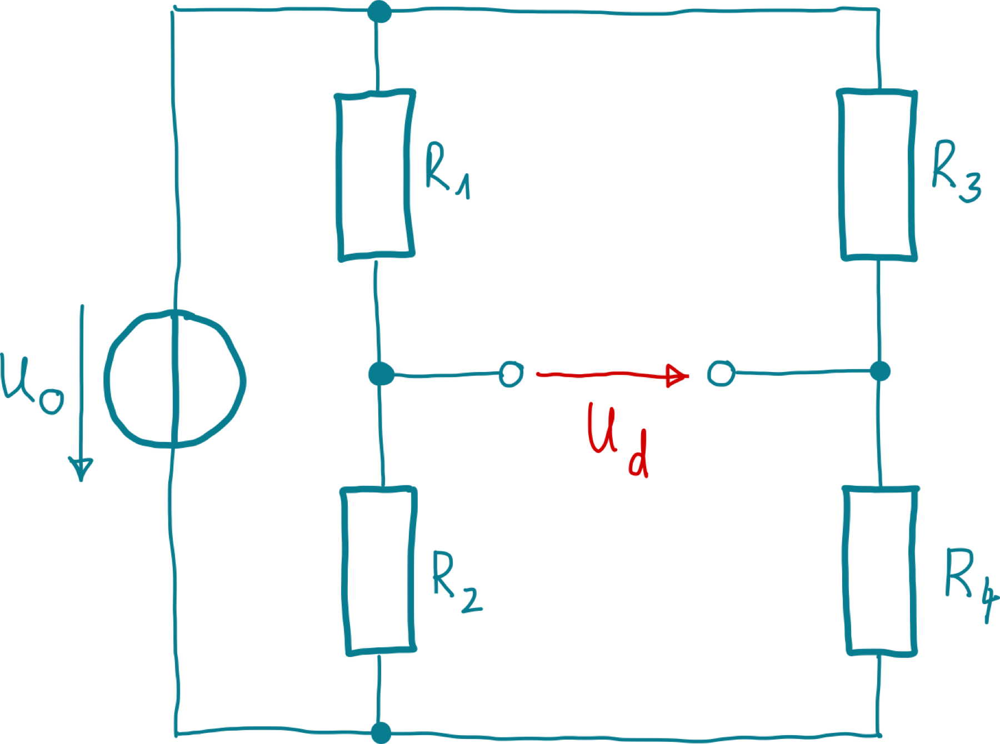

Einträge aus Klausur
Zeitkonstante im System 1. Ordnung
- Dez 24, 2022
Ein lineares System 1. Ordnung mit der Zeitkonstanten \(T\) und dem Übertragungsfaktor \(K = 2\) werde aus dem Beharrungszustand heraus zum Zeitpunkt \(t = 0\) mit einer sprungförmigen Änderung der Eingangsspannung von \(0\,\mathrm V\) auf \(10\,\mathrm V\) beaufschlagt. Welche Spannung wird nach der Zeitdauer \(t = T\) am Ausgang ungefähr anliegen?
Widerstandsmessung
- Dez 24, 2022
Für die indirekte Widerstandsmessung mittels Strom- und Spannungsmessgerät sind zwei unterschiedliche Schaltungsarten gebräuchlich. Benennen und skizzieren Sie diese! Geben Sie weiterhin an, welche davon für die Messung kleiner Widerstände geeigneter ist!
Warenausgangsprüfung
- Dez 24, 2022
Bei einem Hersteller von Geräten und Zubehör für die Wägetechnik werden im Rahmen einer Warenausgangsprüfung Massestücke hinsichtlich ihrer Masse untersucht. Hierzu wird aus einer gefertigten Charge eine Stichprobe vom Umfang \(n = 25\) entnommen und die mittlere Masse \(m\) mittels einer Präzisionswaage experimentell ermittelt. Aus der Stichprobe ergibt sich ein Mittelwert der Masse von \(\overline m = 99{,}997\,\mathrm g\) und eine Streuung (empirische Abweichung der Einzelmessungen) von \(S_m =0{,}007\,\mathrm g\). Die Standardabweichung \(\sigma\) sei unbekannt.
Unbekannt Schaltung identifizieren
- Dez 24, 2022
Geben Sie an, welche der folgenden Aussagen über die nachfolgend abgebildete Schaltung zutreffend sind!
Tiefpass mit Sägezahnspannung
- Dez 24, 2022
Ein Messgerät mit einem Verzögerungsverhalten 1. Ordnung, also einem Tiefpassverhalten, und einer 3,dB-Grenzfrequenz von \(f_0 = 1\,\mathrm{MHz}\) soll im Folgenden charakterisiert werden.

Sprungantworten System 2. Ordnung
- Dez 24, 2022
In nachfolgender Abbildung sind die Sprungantworten dreier – mit A, B und C bezeichneter – linearer Systeme 2. Ordnung dargestellt, welche sich hinsichtlich ihrer Dämpfung \(D\) unterscheiden. Geben Sie an, welche Kombination von Dämpfungen \(D_\mathrm A\), \(D_\mathrm B\) und \(D_\mathrm C\) das Verhalten der dargestellten Systeme A, B und C qualitativ am besten beschreibt!

SI-Einheiten
- Dez 24, 2022
Nennen Sie alle Grundgrößen des SI-Systems sowie ihre Einheiten und Einheitenzeichen!
Piezoelektrischer Sensor
- Dez 24, 2022
Skizzieren Sie den Aufbau eines Piezoelektrischen Kristalls und erläutern Sie dessen Wirkungsweise! Geben Sie mindestens zwei physikalische Größen an, die mittels Piezoelektrizität gemessen werden können.
Normalverteilte Notenverteilung
- Dez 24, 2022
Bei einer Prüfung haben die insgesamt 12 Teilnehmer die in nachfolgender Tabelle zusammen gefassten Noten erzielt:
Kolbenmanometer
- Dez 24, 2022
Ein Kolbenmanometer, auch als Druckwaage bezeichnet, ist ein Instrument, mit welchem in einer Flüssigkeit oder einem Gas ein definierter Druck dargestellt werden kann, indem auf einen Kolben mit bekanntem Querschnitt eine definierte Kraft ausgeübt wird. In der Praxis werden hierzu auf den Kolben Massestücke aufgelegt, welche im Schwerefeld der Erde eine Gewichtskraft auf den Kolben ausüben.

Interferometrische Längenmessung
- Dez 24, 2022
Geben Sie an, welche der folgenden Aussagen hinsichtlich der interferometrischen Längenmessung zutreffend sind!
Empfindlichkeit eines Messgerätes
- Dez 24, 2022
Geben Sie an, welche der folgenden Aussagen hinsichtlich der Empfindlichkeit eines Messgerätes zutreffend sind!
Digitalisierung
- Dez 24, 2022
Ein analoges Spannungssignal im Bereich von \(-12\,\mathrm V\) bis \(+12\,\mathrm V\) soll so digitalisiert werden, dass der maximale Quantisierungsfehler \(2\,\mathrm{mV}\) beträgt. Geben Sie an, mit wie viel Bit der A/D-Umsetzer mindestens arbeiten muss!
Aliasing bei der Digitalisierung von Musik
- Dez 24, 2022
Sie planen, ein Musiksignal zu digitalisieren und hierfür einen A/D-Umsetzer mit einer Abtastfrequenz von \(44,1\,\mathrm{kHz}\) zu verwenden. Sie wissen, dass in dem analogen Musiksignal Frequenzanteile bis hinauf zu \(50\,\mathrm{kHz}\) enthalten sind, deren Amplitude nicht vernachlässigbar ist. Ihnen ist bewusst, dass für diese hohen Frequenzanteile das Abtasttheorem nach Shannon verletzt wird. Ihr Kommilitone schlägt vor, die A/D- Umsetzung dennoch wie geplant vorzunehmen und argumentiert, dass Frequenzen von über \(20\,\mathrm{kHz}\) für den Menschen ohnehin nicht hörbar seien und es daher keine Rolle spiele, wenn diese nicht korrekt digitalisiert werden.